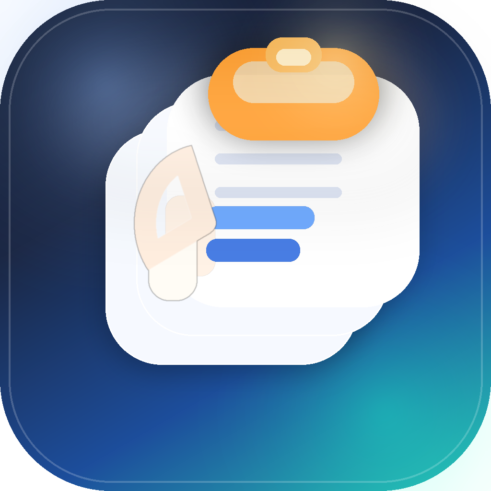

Claude
Just now
Rewrite this API error into a user-facing explanation.
Keep the useful prompt you finally got right.

AiPaste AI native clipboard manager for macOSAI native clipboard for macOS
AiPaste keeps your AI workflow artifacts within reach: prompts, code fixes, research fragments, terminal commands, and the one perfect answer you do not want to lose. Built in SwiftUI, local-first by default, and fast enough to disappear into your workflow until the moment you need it.
Keep your best prompts, reusable instructions, and context snippets one search away.
Find commands, patches, model outputs, and fragments by memory instead of exact wording.
Move cleanly between AI chat, IDE, docs, and terminal without losing state.
AI native workflow
AiPaste is designed for developers, founders, operators, and researchers who bounce between model chats, code editors, docs, and terminals all day and need their working context to stay intact.
Use Cases
PROMPTS
Store refined instructions, chain-of-thought wrappers, critique formats, and repeatable prompt patterns.
CONTEXT
Move snippets from GitHub, terminal logs, issue threads, and source files into the next AI interaction fast.
OUTPUTS
Keep useful model responses, rewritten copy, SQL fixes, shell commands, and release notes drafts in reach.
CAPTURE
AiPaste monitors the pasteboard continuously and keeps the working fragments of your AI sessions in a clean, scan-friendly layout instead of burying them in a dense list.
RETRIEVE
Search across recent clips, jump through groups, and use app context to get back to the exact prompt, code block, or model output you copied earlier.
ORGANIZE
Pin recurring prompts, move clips into named groups, recolor workspaces, and exclude noisy or sensitive apps so your history stays useful instead of overwhelming.
OPERATE
Show or hide the panel, paste a selected clip, manage groups, and change configuration from terminal commands that match the same workflow you use across AI tools and dev environments.
AI LOOP
AiPaste keeps the small pieces of context that make AI work actually usable across many tabs and tools.
PASTE BACK
When Accessibility is enabled, AiPaste can paste directly back into the app you were just using.
PRIVATE BY DEFAULT
Your prompts, snippets, and copied outputs stay in a native local-first app instead of another web layer.
Install
HOMEBREW
brew tap AiPaste/aipaste
brew install --cask aipaste
brew upgrade --cask aipasteRELEASE ZIP
Open GitHub Releases
Download the latest zip
Move AiPaste.app to /ApplicationsCLI
./bin/aipaste help
./bin/aipaste list --limit 10
./bin/aipaste items paste 1FAQ
It is AI native, not an LLM wrapper. AiPaste helps you manage the prompts, context, and outputs around AI work.
Yes. AiPaste is designed as a local-first clipboard tool for macOS.
Yes. The bundled CLI covers panel actions, item actions, groups, ignore rules, and configuration.
Yes, with macOS Accessibility permission enabled for paste-to-app actions.
Run ./scripts/serve_website.sh and open the local address it prints.
AiPaste
A native clipboard manager for people doing serious AI work on macOS and tired of losing the useful parts.